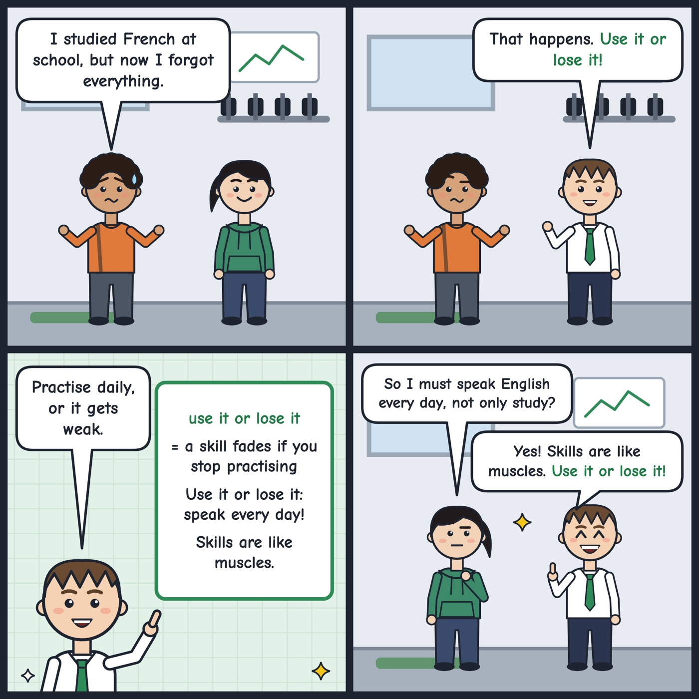

use it or lose it
If you don't use a skill or something you have, you will lose it.
You've learned so much English. Use it or lose it, so keep talking every day!
'Use it or lose it' means a skill or ability fades if you stop practising it.

Your turn
What skill are you afraid to lose?
What skill are you afraid to lose?